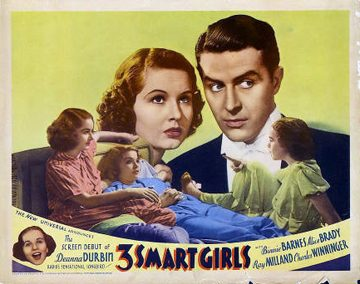

Three Smart Girls
1936 film by Henry Koster
Three Smart Girls is a 1936 American musical comedy film directed by Henry Koster and starring Barbara Read, Nan Grey, Deanna Durbin (her feature film debut), and Ray Milland. The film's screenplay was written by Adele Comandini and Austin Parker, and is about three sisters who travel to New York City to prevent their father from remarrying. The three plot to bring their divorced parents back together again.
Trivia
- Nominated for: Academy Award for Best Picture; Academy Award for Best Story; Academy Award for Best Sound.
Previous Showings
10 Runs • 8 Festivals
Original Billings: 1 run (March 12, 1937)
Original Run: March 12, 1937 (Friday - Saturday)
All runs on record (10):
- March 12, 1937 (Friday - Saturday) · Deanna Durbin, Binnie Barnes
- March 24, 2001 · Winter 2001 · w/ One in a Million
- June 22 - 24, 2011 · Musicals · w/ Song of the Open Road
- January 4 - 7, 2012 · Deanna Durbin Festival · w/ For the Love of Mary
- December 1 - 3, 2012 · Deanna Durbin Festival · w/ One Hundred Men and a Girl
- January 4 - 7, 2013 · January 2013 More Classics from Universal Pictures · w/ For the Love of Mary
- August 28 - 30, 2013 · Summer 2013 · w/ Three Smart Girls Grow Up
- September 15 - 16, 2014 · Summer 2014 · w/ Girl Crazy
- July 31 - August 2, 2019 · Summer 2019 · w/ It Started with Eve
- November 30 - December 1, 2023 · Holiday Favorites plus Deanna Durbin · w/ Three Smart Girls Grow Up